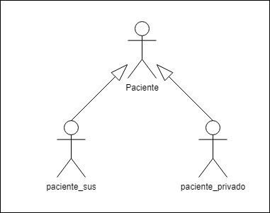

Diagramas de Casos de Uso - Atores
Frank Coelho de Alcantara -2020
UML
UML - Unified Modeling Language é uma linguagem, principalmente gráfica, para a modelagem de sistemas que é independente de linguagens de programação e de paradigmas de linguagens de programação
A UML foi criada para facilitar a análise de sistemas por meio de um processo de modelagem bem definido e documentado.
Versão e objetivo
“O objetivo da UML é fornecer a arquitetos de sistemas, engenheiros de software e desenvolvedores de software ferramentas para análise, design e implementação de sistemas baseados em software e para a modelagem de processos de negócio e processos similares”
Cada diagrama é voltado para uma parte do processo é necessário que o profissional responsável pela modelagem conheça a área específica do diagrama.
Natureza dos Diagramas
Estruturais vs. Comportamentais: as características estruturais indicam como o negócio está estruturado enquanto os comportamentais indicam o fluxo de informação no sistema.
Estáticos vs. Dinâmicos: diagramas que modelam condições não relacionadas a mudança do tempo são estáticos, todos os outros, são dinâmicos. Mesmo que indiquem um instante do tempo.
Natureza dos Diagramas UML

Fonte:(UNHELKAR,2010) Diagramas UML segundo sua natureza
Visão Geral dos Diagramas UML
Na UML 2.51 são definidos 23 diagramas diferentes. Não vamos detalhar todos eles, para isso, você pode ver a documentação da linguagem versão 2.51.
Diagramas de Caso de Uso
Use Case Diagrams ou Diagrama de Caso de Uso representam um modelo da interação entre os atores (stakeholders e outros sistemas) com o sistema que está sendo modelado. Captura, em alto nível, os requerimentos do sistema. Não mostra um caso de uso, em vez disso, apresenta os atores, suas funções, sua relações com o sistema e as funcionalidades envolvidas.
Figura 2: Diagramas de Caso de Uso

Fonte: o autor (2020) Diagrama de caso de uso - exemplo
Diagramas de Atividade
Activity Diagrams ou Diagrama de atividades são como fluxogramas, são diagramas que modelam o fluxo de informação em um processo. Esta modelagem pode ser feita em processo de negócio ou entre diagramas de casos de uso. Estes diagramas são usados para documentar o fluxo de informação em um determinado caso de uso representando um conjunto de processos de negócio mas podem representar o fluxo de informação entre casos de uso ou, se for o caso, em todo o negócio.
Figura 3: Diagramas Atividades

Fonte: (BAUSOLA, 2008) Diagrama de Atividades - exemplo
Diagramas de Classe
Classe Diagrams ou Diagrama de classe são diagramas estruturais e estáticos que representam os elementos mais importantes nos domínios técnico e de negócio. Podem representar tanto as entidades do negócio quanto as entidades necessárias para a criação do software. Neste caso, linguagens de programação orientadas à objetos podem ter seus elementos estruturais diretamente ligados a elementos de negócio.
Figura 4: Diagrama de Classes

Fonte: (WIKIMEDIA, 2016) Diagrama de Classes - exemplo
Diagramas de Sequência
Sequence Diagrams ou Diagrama de sequência apresentam as entidades que participam de um determinado caso de uso e as mensagens que são trocadas entre eles ao longo do tempo. Trata-se de um diagrama dinâmico que permite a visualização explicita das mensagens passadas entre entidades em uma interação específica.
Figura 5: Diagramas de sequência

Fonte: o autor (2016) Diagrama de Classes - exemplo
Diagramas de Objetos
Object Diagrams ou Diagrama de objetos representa um determinado momento congelado no tempo destacando as entidades do sistema, objetos e atores, e seu relacionamento neste momento específico. Mostra os objetos em tempo de execução de forma estática. Como se fosse uma fotografia de um processo em andamento.
Figura 6: Diagramas de Objetos
Fonte: o autor (2020) Diagrama de objetos - exemplo
Diagrama de Casos de Uso
São diagramas de comportamento, estáticos, usados para descrever um conjunto de ações, casos de uso que um determinado sistema deve realizar por meio da interação de um ou mais atores.
Diagrama de Casos de Uso - Atores
Um ator é uma função do sistema que será realizada por uma pessoa, ou coisa, externa ao sistema. O ator, interage com o sistema para permitir que o sistema atinja seus objetivos. O ator é a função, não a pessoa que está executado a função e, como tal, um ator pode participar de vários casos de uso.
Diagrama de Casos de Uso - Atores continuação
- Um ator é uma função do sistema que gera valor;
- Um ator é uma função do sistema que inicia uma interação com o sistema;
- Um ator é um função do sistema que se beneficia de uma interação com o sistema;
- O tempo é um ator, já que existem interações que podem ser iniciadas com o passar do tempo;
- Um ator pode ser um outro sistema qualquer que interaja com o sistema que estamos modelando;
- Um ator pode ser um dispositivo externo, como uma impressora.
Diagrama de Casos de Uso - Encontrando Atores
- Quais serão os usuários do sistema? (a função, não a pessoa);
- Existem usuários primários e secundários? Quem são?
- Quais serão os beneficiários das ações do sistema? (a função, não a pessoa);
- Quais são os sistemas, e dispositivos, que vão interagir com o sistema?
- Este sistema sofre a influência de algum evento relativo a passagem do tempo?
Diagrama de Casos de Uso - Classificação
Atores primários: aqueles para os quais o sistema existe. Estes são os principais beneficiários do sistema. Atores secundários: são atores cuja função existe no sistema mas que não iniciam interações ou são beneficiados por elas.
Atores diretos: são os atores que efetivamente usam o sistema. Voltando ao exemplo do sistema hospitalar podemos classificar o atendente de balcão como um ator direto já que é ele que irá dar entrada nos dados dos pacientes. Atores indireto: são os atores afetados pelo sistema mas que não usam o sistema. De volta ao exemplo do sistema hospitalar, um paciente é um ator indireto.
Atores abstratos: são os atores que servem como base para a definição das interações e características de outros atores. Atores concretos: são os atores que herdam características de um outro ator.
Figura 7: atores abstratos e concretos

Fonte: o autor (2020) Diagrama de objetos - exemplo
Exemplo de documentação de atores
Nome: paciente_sus Classe: ator concreto herdeiro de Paciente Descrição: Ator para indicar os pacientes que serão tratados no hospital de acordo com as regras determinadas pelo convênio com o SUS. Utilizará o sistema de forma direta apenas para registar sua entrada no hospital e sua saída. Não esquecer a necessidade de assinatura nos documentos relativos ao convênio com o SUS.
Material de apoio
Você pode baixar o material de apoio clicando aqui
Obras Citadas
BAUSOLA, D. Activity Diagram. zeroinfluence, 2012. Disponível em: http:zeroinfluence.wordpress.com/uml. Acesso em: 04 Ago. 2020. BECK, Kent et. Al. Manifesto para Desenvolvimento Ágil de Software. 2001. Disponível em: https://agilemanifesto.org/iso/ptbr/manifesto.html . Acesso em: 10 ago 2020.BECK, Kent e ANDRES, Cynthia. Extreme Programming Explained. 2012.Boston, MA. USA. Addison Wesleyt. 2º Edição.
SOMMERVILLE, I. Engenharia de software. São Paulo, SP. Brasil: Pearson , 2012.
UNHELKAR, B. Software Engineering with UML. Boca Raton, FL. USA: Taylor & Francis Group, LLC, 2018.